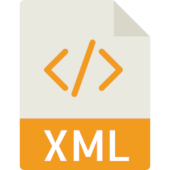

¿Qué es un Lenguaje de Marcas?
Un lenguaje de marcas es un sistema que utiliza etiquetas para anotar un documento de una manera que es sintácticamente distinguible del texto.
Estas anotaciones típicamente sirven para indicar cómo se debe presentar el documento en el navegador, estructurarlo, o incluso describir los datos que contiene.

Ejemplos de Lenguajes de Marcas
- HTML (HyperText Markup Language): Utilizado para crear y estructurar páginas web.
<!DOCTYPE html>
<html lang="es">
<head>
<meta charset="UTF-8">
<title>Mi Página Web</title>
</head>
<body>
<h1>¡Hola, mundo!</h1>
<p>Este es un ejemplo de párrafo en HTML.</p>
</body>
</html>
<?xml version="1.0" encoding="UTF-8"?>
<persona>
<nombre>Juan</nombre>
<apellido>Pérez</apellido>
<edad>30</edad>
</persona>
# Título Principal
Esto es un párrafo en **Markdown**.
- Lista 1
- Lista 2
Características de los Lenguajes de Marcas
- Uso de etiquetas para definir elementos.
- Estructura jerárquica de los documentos.
- Facilidad de lectura y edición tanto por humanos como por máquinas.
- Independencia de plataforma y sistema operativo.
Importancia de los Lenguajes de Marcas
Los lenguajes de marcas son fundamentales en el desarrollo web y en la gestión de datos.
Permiten a los desarrolladores definir la estructura y presentación de documentos, lo que es esencial para la creación de sitios web accesibles y bien organizados. Además, facilitan la interoperabilidad entre diferentes sistemas y plataformas.
XML
XML (eXtensible Markup Language) es un lenguaje de marcas que se utiliza para almacenar y transportar datos. A diferencia de HTML, XML no define cómo se deben mostrar los datos, sino que se enfoca en la estructura y el significado de los datos.
Características Principales
- XML es auto-descriptivo y extensible.
- Permite definir etiquetas personalizadas.
- Facilita la interoperabilidad entre sistemas diferentes.
- Se utiliza comúnmente en aplicaciones web, servicios web y para el intercambio de datos.
Estructura de un Documento XML
Un documento XML está compuesto por elementos, que pueden contener atributos y texto. Cada documento debe tener un elemento raíz que contenga todos los demás elementos.

<?xml version="1.0" encoding="UTF-8"?>
<libros>
<libro id="1">
<titulo>Aprendiendo XML</titulo>
<autor>Juan Pérez</autor>
<precio>29.99</precio>
</libro>
<libro id="2">
<titulo>XML para Principiantes</titulo>
<autor>Ana García</autor>
<precio>19.99</precio>
</libro>
</libros>
Reglas Básicas de XML
- Todos los elementos deben tener una etiqueta de cierre.
- Las etiquetas XML son sensibles a mayúsculas y minúsculas.
- Los atributos deben estar entre comillas.
- Un documento XML debe tener un único elemento raíz.
Ejemplos Prácticos
Ejemplo 1: Lista de Productos
<?xml version="1.0" encoding="UTF-8"?>
<productos>
<producto>
<nombre>Laptop</nombre>
<precio>799.99</precio>
<stock>25</stock>
</producto>
<producto>
<nombre>Smartphone</nombre>
<precio>499.99</precio>
<stock>100</stock>
</producto>
</productos>
Ejemplo 2: Catálogo de Películas
<?xml version="1.0" encoding="UTF-8"?>
<peliculas>
<pelicula>
<titulo>Inception</titulo>
<director>Christopher Nolan</director>
<año>2010</año>
</pelicula>
<pelicula>
<titulo>The Matrix</titulo>
<director>The Wachowskis</director>
<año>1999</año>
</pelicula>
</peliculas>
Ejercicios Propuestos
Ejercicio 1: Crear un Documento XML de Contactos
Crear un documento XML que contenga una lista de contactos. Cada contacto debe tener los siguientes elementos: nombre, teléfono, y correo electrónico.
Ejercicio 2: Crear un Documento XML de una Biblioteca
Crear un documento XML que represente una biblioteca. Cada libro debe tener un título, un autor, un género, y un año de publicación.
Ejercicio 3: Crear un Documento XML de un Calendario de Eventos
Crear un documento XML que contenga un calendario de eventos. Cada evento debe tener un nombre, una fecha, una hora y una descripción.
Validación de XML
La validación de documentos XML asegura que los datos siguen una estructura específica. Los métodos más comunes para validar XML son DTD (Document Type Definition) y XML Schema (XSD).
Validación con DTD
DTD define la estructura legal de un documento XML. Se puede declarar internamente dentro del documento XML o externamente.
Ejemplo de DTD Interno
<!DOCTYPE libros [
<!ELEMENT libros (libro+)>
<!ELEMENT libro (titulo, autor, precio)>
<!ATTLIST libro id ID #REQUIRED>
<!ELEMENT titulo (#PCDATA)>
<!ELEMENT autor (#PCDATA)>
<!ELEMENT precio (#PCDATA)>
]>
<libros>
<libro id="1">
<titulo>Aprendiendo XML</titulo>
<autor>Juan Pérez</autor>
<precio>29.99</precio>
</libro>
</libros>
Ejemplo de DTD Externo
<!ELEMENT libros (libro+)>
<!ELEMENT libro (titulo, autor, precio)>
<!ATTLIST libro id ID #REQUIRED>
<!ELEMENT titulo (#PCDATA)>
<!ELEMENT autor (#PCDATA)>
<!ELEMENT precio (#PCDATA)>
<?xml version="1.0" encoding="UTF-8"?>
<!DOCTYPE libros SYSTEM "libros.dtd">
<libros>
<libro id="1">
<titulo>Aprendiendo XML</titulo>
<autor>Juan Pérez</autor>
<precio>29.99</precio>
</libro>
</libros>
Elementos de DTD
DTD (Document Type Definition) define la estructura legal de un documento XML y los elementos que puede contener. Aquí están los elementos y sus usos:
-
<!ELEMENT>
Define un elemento. La sintaxis es:
<!ELEMENT nombre (contenido)>El contenido puede ser:- #PCDATA: Datos de carácter parseados (texto).
- ELEMENTO: Un subelemento.
- (elemento1, elemento2): Una secuencia específica de subelementos.
- (elemento1 | elemento2): Una elección entre elementos.
- (elemento*): Cero o más ocurrencias del elemento.
- (elemento+): Una o más ocurrencias del elemento.
- (elemento?): Cero o una ocurrencia del elemento.
-
<!ATTLIST>
Define atributos para un elemento. La sintaxis es:
<!ATTLIST nombre atributo tipo valor_predeterminado>- nombre: El nombre del elemento al que pertenece el atributo.
- atributo: El nombre del atributo.
- tipo: El tipo de dato del atributo (CDATA, ID, IDREF, NMTOKEN, etc.).
- valor_predeterminado: El valor por defecto del atributo (#REQUIRED, #IMPLIED, "valor").
-
<!ENTITY>
Define una entidad. Las entidades pueden ser generales o parametrizadas, internas o externas. La sintaxis es:
<!ENTITY nombre "valor">para entidades internas y<!ENTITY nombre SYSTEM "URI">para entidades externas.
Validación con XML Schema (XSD)
XML Schema es más potente que DTD y permite definir tipos de datos, así como estructuras más complejas.
Ejemplo de XML Schema
<?xml version="1.0" encoding="UTF-8"?>
<xsd:schema xmlns:xsd="http://www.w3.org/2001/XMLSchema">
<xsd:element name="libros">
<xsd:complexType>
<xsd:sequence>
<xsd:element name="libro" maxOccurs="unbounded">
<xsd:complexType>
<xsd:sequence>
<xsd:element name="titulo" type="xsd:string"/>
<xsd:element name="autor" type="xsd:string"/>
<xsd:element name="precio" type="xsd:decimal"/>
</xsd:sequence>
<xsd:attribute name="id" type="xsd:ID" use="required"/>
</xsd:complexType>
</xsd:element>
</xsd:sequence>
</xsd:complexType>
</xsd:element>
</xsd:schema>
<?xml version="1.0" encoding="UTF-8"?>
<libros xmlns:xsi="http://www.w3.org/2001/XMLSchema-instance" xsi:noNamespaceSchemaLocation="libros.xsd">
<libro id="1">
<titulo>Aprendiendo XML</titulo>
<autor>Juan Pérez</autor>
<precio>29.99</precio>
</libro>
</libros>
Elementos de XML Schema (XSD)
XML Schema (XSD) define la estructura, contenido y tipos de datos de un documento XML. Aquí están los elementos y sus usos:
-
<xsd:schema>
El elemento raíz del esquema. Define el espacio de nombres y los componentes del esquema.
<xsd:schema xmlns:xsd="http://www.w3.org/2001/XMLSchema"> -
<xsd:element>
Define un elemento. La sintaxis es:
<xsd:element name="nombre" type="tipo"/>Puede ser un tipo simple o complejo.- name: El nombre del elemento.
- type: El tipo de dato del elemento (xsd:string, xsd:int, etc.).
- minOccurs: El número mínimo de ocurrencias (por defecto es 1).
- maxOccurs: El número máximo de ocurrencias (por defecto es 1 o "unbounded" para ilimitado).
-
<xsd:complexType>
Define un tipo complejo que puede contener otros elementos y atributos. La sintaxis es:
<xsd:complexType>...</xsd:complexType> -
<xsd:sequence>
Define una secuencia de elementos que deben aparecer en el orden especificado. Se usa dentro de un
<xsd:complexType> -
<xsd:attribute>
Define un atributo para un elemento. La sintaxis es:
<xsd:attribute name="nombre" type="tipo" use="uso"/>- name: El nombre del atributo.
- type: El tipo de dato del atributo.
- use: Indica si el atributo es opcional ("optional") o requerido ("required").
-
<xsd:restriction>
Restringe los valores permitidos para un tipo de dato. Se usa dentro de un
<xsd:simpleType>- <xsd:enumeration>: Define un valor permitido específico.
- <xsd:minLength>: Define la longitud mínima del valor.
- <xsd:maxLength>: Define la longitud máxima del valor.
Ejercicios Propuestos
Ejercicio 1: Crear un Documento XML de Contactos
Crear un documento XML que contenga una lista de contactos. Cada contacto debe tener los siguientes elementos: nombre, teléfono, y correo electrónico.
Ejercicio 2: Crear un Documento XML de una Biblioteca
Crear un documento XML que represente una biblioteca. Cada libro debe tener un título, un autor, un género, y un año de publicación.
Ejercicio 3: Crear un Documento XML de un Calendario de Eventos
Crear un documento XML que contenga un calendario de eventos. Cada evento debe tener un nombre, una fecha, una hora y una descripción.
Ejercicio 4: Validar un Documento XML con DTD
Crear un DTD para validar el documento XML de contactos creado en el ejercicio 1.
Ejercicio 5: Validar un Documento XML con XML Schema
Crear un XML Schema para validar el documento XML de la biblioteca creado en el ejercicio 2.
Markdown
Markdown es un lenguaje de marcado ligero creado por John Gruber en 2004 con la colaboración de Aaron Swartz. Su objetivo es permitir escribir utilizando un formato de texto plano fácil de leer y escribir, que luego pueda convertirse de manera confiable a HTML estructurado.
Características Principales de Markdown
- Sencillez: La sintaxis de Markdown es minimalista y fácil de aprender.
- Legibilidad: El texto en Markdown es fácilmente legible, incluso sin ser convertido a HTML.
- Compatibilidad: Markdown se puede convertir a HTML y es compatible con muchas plataformas y editores.
- Extensibilidad: Aunque es simple, Markdown permite la extensión con características adicionales como tablas, citas y mucho más.
Sintaxis Básica
Markdown utiliza caracteres simples para aplicar formato al texto:
# Título Principal
## Subtítulo
- Lista de elementos
- Subelemento
**Texto en negrita**
*Texto en cursiva*
[Enlace a ejemplo.com](http://ejemplo.com)
Ejemplos Avanzados
A continuación, se muestran ejemplos más avanzados de Markdown:
Bloques de Código
Para mostrar bloques de código, se utilizan backticks (\`) para una línea o triples backticks (\`\`\`) para bloques de código:
\```javascript
function saludar() {
console.log('¡Hola, mundo!');
}
saludar();
\```
Listas y Tablas
Markdown permite crear listas ordenadas y no ordenadas, así como tablas sencillas:
- Elemento 1
- Elemento 2
1. Primer elemento
2. Segundo elemento
| Encabezado 1 | Encabezado 2 |
|--------------|--------------|
| Celda 1 | Celda 2 |
Aplicaciones de Markdown
Markdown se utiliza ampliamente en varias áreas:
- Documentación técnica y en GitHub para README.
- Tomar notas y escribir documentos rápidamente.
- Blogs y publicaciones en plataformas como Medium.
- Formateo de mensajes en foros y correos electrónicos.
Ejercicios Propuestos
Crear una Lista de Tareas
Utiliza Markdown para crear una lista de tareas con al menos tres elementos. Marca algunos elementos como completados y otros como pendientes.
- [x] Terminar la tarea 1
- [ ] Revisar el informe
- [x] Preparar la presentación
Crear un Texto con Formato en Markdown
Crea un breve texto utilizando diferentes formatos de texto disponibles en Markdown, como:
negrita
** cursiva
* tachado
~~
# Reporte de Proyecto
Este es un **informe** sobre el proyecto de *Markdown*. Estamos ~~analizando~~ los diferentes usos de Markdown en la escritura técnica.
Crear una Tabla en Markdown
Crea una tabla simple utilizando Markdown para mostrar información organizada en filas y columnas.
| Nombre | Edad | Ciudad |
|----------|------|------------|
| Juan | 25 | Barcelona |
| María | 30 | Madrid |